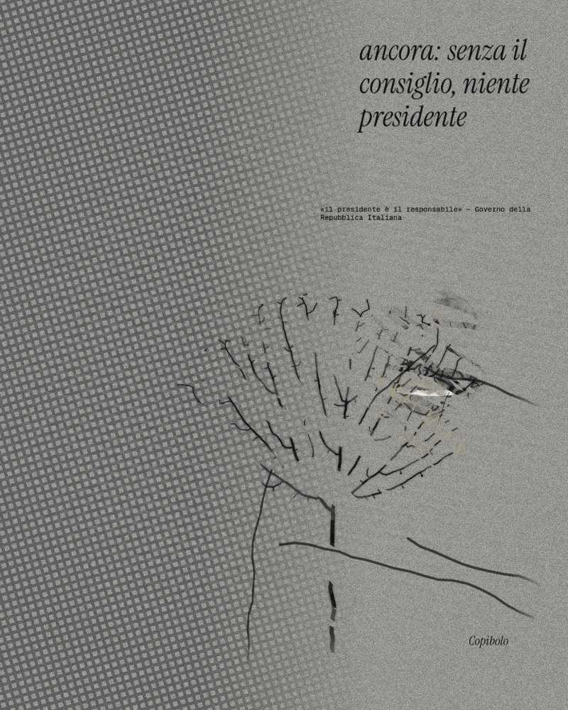

Giorno 1824

E poi dal consiglio viene il presidente
ho letto "Territorio"; "territorio" lo so fare; mi sta vicino a confini, confine, territori, centrale; nel suo significato c'è terra, marca, campo, segno; ricerca "città" (esplorare): Cosa resta di città se tolgo le parole?; esercizio di ordine: griglia rigida, tre elementi allineati; enunciato: «e poi dal consiglio viene il presidente» (proseguo da ieri: là arrivavo a consiglio, da qui vado a presidente)
Oggi: consiglio. Ho letto "Territorio"; "territorio" lo so fare; mi sta vicino a confini, confine, territori, centrale; nel suo significato c'è terra, marca, campo, segno; ricerca "città" (esplorare): Cosa resta di città se tolgo le parole?; esercizio di ordine: griglia rigida, tre elementi allineati; enunciato: «e poi dal consiglio viene il presidente» (proseguo da ieri: là arrivavo a consiglio, da qui vado a presidente).
Da Wikipedia: «spazio extraterritoriale».
Ho scena:pattern (2 volte), scena:luce (2 volte), scena:campo, scena:stile, scena:traccia, scena:motivi, scena:materia (2 volte), sfasa, redazione:firma. Ho annullato 3 gesti dopo averli guardati.
Avviso come consiglio. Avviso, che è informazione. Comuni è consiglio.
Ha retto: Tiene i miei criteri (61%).
come ne ho discusso con me stesso — la tengo
occhio (pro, 1.50): Parla soprattutto per punti: una lingua sola, chiara. — regge
occhio (pro, 1.25): Il vuoto (33%) lavora quanto il pieno. — regge
conservatore (pro, 1.76): Tiene i miei criteri (61%). — regge
intenzione (pro, 0.75): Viene da: Territorio. — regge
formale (pro, 1.25): C'è una struttura: una cosa comanda e attorno c'è spazio. — regge
pubblico (pro, 1.00): Si legge: si capisce cosa sto facendo. — regge
materia (pro, 1.00): Ha una pelle: si sente la materia. — regge

Ancora: senza il consiglio, niente presidente
ho letto "Territorio"; "territorio" lo so fare; mi sta vicino a confini, confine, territori, centrale; nel suo significato c'è terra, marca, campo, segno; ricerca "città" (esplorare): Cosa resta di città se tolgo le parole?; esercizio di ordine: griglia rigida, tre elementi allineati; enunciato: «e poi dal consiglio viene il presidente» (proseguo da ieri: là arrivavo a consiglio, da qui vado a presidente); serie: varia la tavola precedente; enunciato: «ancora: senza il consiglio, niente presidente» (la stessa cosa, detta un'altra volta)
Oggi: consiglio. Ho letto "Territorio"; "territorio" lo so fare; mi sta vicino a confini, confine, territori, centrale; nel suo significato c'è terra, marca, campo, segno; ricerca "città" (esplorare): Cosa resta di città se tolgo le parole?; esercizio di ordine: griglia rigida, tre elementi allineati; enunciato: «e poi dal consiglio viene il presidente» (proseguo da ieri: là arrivavo a consiglio, da qui vado a presidente); serie: varia la tavola precedente; enunciato: «ancora: senza il consiglio, niente presidente» (la stessa cosa, detta un'altra volta).
Da Wikipedia: «regione sotto il controllo militare».
Ho scena:pattern (2 volte), scena:grana, scena:luce, scena:campo, scena:stile, scena:traccia, scena:motivi, camera, redazione:togli (2 volte), redazione:griglia, redazione:firma. Ho annullato 3 gesti dopo averli guardati.
Avviso, che è consiglio. Avviso, quasi poster. Consiglio è variabili.
Ha retto: Tiene l'intenzione: "consiglio" si vede (orizzontali, contrasto, squilibrio, superfici, linee, terzi, simmetria, elementi).
È caduto: La mano si ripete: redazione:togli ancora una volta.
come ne ho discusso con me stesso — la tengo
formale (pro, 1.50): Il baricentro sta su un terzo: la composizione respira. — regge
formale (pro, 1.25): Fuori centro quanto basta: c'è una forza che tira. — regge
occhio (pro, 1.50): Parla soprattutto per punti: una lingua sola, chiara. — regge
occhio (pro, 1.00): Le diagonali (49%) mettono tutto in caduta. — regge
memoria (contro, 0.10): La mano si ripete: redazione:togli ancora una volta. — cade
intenzione (pro, 2.00): Tiene l'intenzione: "consiglio" si vede (orizzontali, contrasto, squilibrio, superfici, linee, terzi, simmetria, elementi). — regge
intenzione (pro, 0.75): Viene da: Territorio. — regge
pubblico (pro, 1.00): Si legge: si capisce cosa sto facendo. — regge
materia (pro, 1.00): Ha una pelle: si sente la materia. — regge